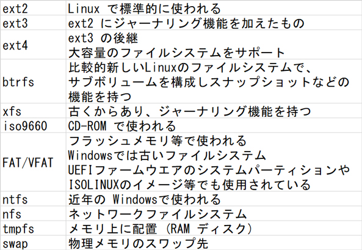

- 問題ID : 21935 ファイルシステムの設定とマウント
- 履歴
正解
tmpfs
解説
Linux では多くのファイルシステムに対応しており、パーティションごとに異なるファイルシステムを用いることができます。
主要なファイルシステムの名前とその概要を覚えておきましょう。
メモリ上に配置する特殊なファイルシステムとして
・tmpfs
があり、これが正解です。
メモリは容量が小さめで、システムを停止させると内容が失われてしまいますが、ハードディスクに比べアクセスが非常に高速です。
tmpfs はこのようなメモリの特性が活かせる場合に利用します。例えば、データを一時的に保存する領域用など。
他の選択肢について見てみます。
・nfs
ネットワーク経由でディレクトリをマウント、共有するための仕組みです。
メモリ上に配置するファイルシステムではありませんので、誤りです。
・swap
物理メモリ上にデータが収まりきらなくなった場合に、ハードディスク上の領域をメモリの一部として利用することがあり、そのための領域が swap と呼ばれます。
メ
モリとハードディスクに関係するという点では tmpfs と似ていますが、tmpfs
はメモリ上に通常はハードディスク上にあるファイルシステムを作るもの、swap
はハードディスク上に通常はメモリ上にある一時データ保持領域を作るものなので、役割は逆のものといえます。
・ext2
Linux で標準的に使われるファイルシステムです。
メモリ上に配置することはできないので、誤りです。
参考
ファイルシステムの種類として、主なものは以下の通りです。

上記の各ファイルシステム間の移行は、原則としては現行のデータをバックアップし、新しいファイルシステムを作成したのち、バックアップからコピーをするような形になりますが、一部のファイルシステム間では、コマンドにより変換が可能です。
例
えば、ext2ファイルシステムはtune2fsコマンドを使ってext3に変換が可能ですし、ext2/ext3/ext4ファイルシステムから
btrfsファイルシステムへの変換はbtrfs-convertというコマンドがあります。これらの場合も、万が一のためのバックアップは必要ですが、
新たにデータを手動でコピーすることなく、新しいファイルシステムに移行することができます。
なお、ファイルシステムの変換ができる場合でも、変換の逆は必ずしも可能ではないことに注意してください。